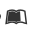
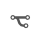

Libretti Demo 2
Annotations Display / Visualizing Text Annotations
This demo illustrates the display of annotations and variances, especially from the single-source window (example: Weber’s personal copy of the libretto text KA-tx4).
Demo: Annotations Display (Single-Source)
Both annotation forms and variance views can be displayed and hidden via the menu and are respectively displayed to the right of the text transmission and side-by-side (where different annotation forms pertain to a passage).
A single-source annotation is visible in the adjacent window that is accessible via the simple annotation icon.
Annotation icons appear in the relevant passages with annotations.
Annotations use various icons to imply different annotation forms:
1. Icon annotation-o = single-source annotations |
|
2. Icon annotations-o = annotation covering all sources |
Demo: Display of Annotations refering to Weber’s Diary
There are, in addition, annotations pertaining to the contents of the homepage of the Carl-Maria-von-Weber-Gesamtausgabe (WeGA).
|  | Special annotations referring to diary entries can be selected via the icon (icon book). Click on the icon to go directly to the WeGA page. |
Click here to go to Demo 2.
Demo: Variance Display: Preview (Mouse-Over)
The variance display refers to entries in the core files constructed scene-by-scene (see documentation: “Encoding the Variances”).
|  | The variance icon (icon: code-fork rotated 90°) appears at relevant passages with variance. Upon touching the variance icon, a tooltip opens the relevant entry of the core file; upon clicking, an annotation window opens with the relevant variance entry including source siglum and image (see bottom image). |
The heading defines the classification of the variance entry from the following possible categories: omission, addition, replacement, spelling, or conversion.
Categories can also be combined within an entry.
All variances related to the location appearing in the text window are listed in tabular form. The text variant of the relevant source appears under the source siglum. Identical readings are categorically grouped.
It is also possible to display the device entries of the core files in XML version.
Demo: Variance Display: Details (Window 2)
When clicking on the icon opens a separate annotation window, source sigla appear there combined with an image of the source.
Displayed in addition to these images is the respective variant text. Here as well, the same variants are optically grouped together, though the text for every source is explicitly indicated again.
The functions in Edirom Online shown and/or described in the demo are accessible in all libretto sources, but there are still problems, especially in the variance display, implementing the data and/or regarding its correct readout.
Go directly to the Demo Annotation Display.
See also Demo 1: “Text-Layer Display,” and Demo 3: “Text-Variance Display” (covering all sources).